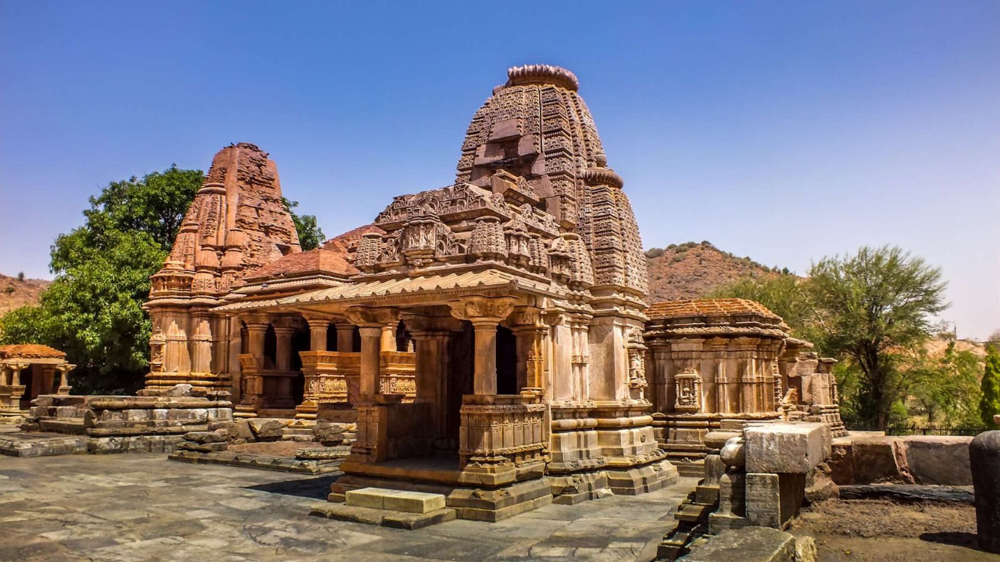
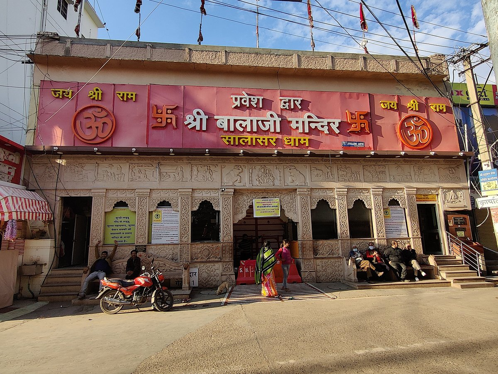
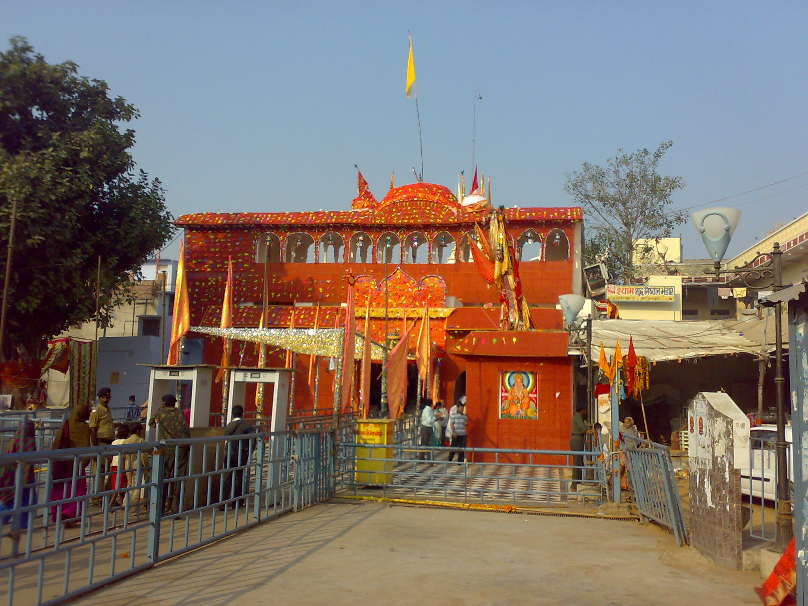

Temples in the Rajasthan
Brahma mandir pushkar
The Brahma Temple in Pushkar, Rajasthan, is a 14th-century temple, though believed to be 2,000 years old, dedicated to the Hindu God of Creation, Lord Brahma. It is considered the most significant temple dedicated to Brahma in the world. Located near the holy Pushkar Lake, it features a distinct red spire (shikhara) and a Chaturmukhi idol of Brahma.
- Location & Visitor Information
- Location: Located near the central Pushkar Lake in Rajasthan.
- Best Time to Visit: October to March, particularly during the vibrant Pushkar Camel Fair (Kartik Purnima), when the town is most active.
- Accessibility: The temple is walkable from most places in the small town of Pushkar.
- Official Rajasthan Tourism – Pushkar
Eklingji Temple (Udaipur)

The Eklingji Temple, located about 22-28 km north of Udaipur in Kailashpuri, is a revered 8th-century Hindu temple complex dedicated to Lord Shiva, the ruling deity of the Mewar dynasty.
- Significance: Protector of Mewar kingdom.
- Architecture: Marble and sandstone structure.
- Main Deity: Four-faced Shiva idol.
- Location: Udaipur, Rajasthan.
- Official Rajasthan Tourism – Udaipur
Shri Manshapurna Karni Mata Temple
The Shri Manshapurna Karni Mata Temple in Udaipur is a revered Hindu temple dedicated to Karni Mata, located atop the Machla Magra Hills near Doodh Talai Lake.
- Location: Udaipur hills.
- Famous for sunset views.
- Ropeway available.
- Official Rajasthan Tourism – Udaipur
Salasar Balaji Mandir, Dausa

Salasar Balaji is a renowned Hindu temple dedicated to Lord Hanuman, located in Rajasthan.
- Location: Churu district, Rajasthan.
- Famous for Hanuman Ji idol with beard.
- Major fairs held twice a year.
- Official Rajasthan Tourism
Khatushyam mandir

Khatu Shyam Ji Mandir is one of the most important pilgrimage sites in Rajasthan.
- Main deity: Barbarik (Khatu Shyam Ji).
- Location: Sikar, Rajasthan.
- Famous for Phalgun Mela.
- Official Rajasthan Tourism – Sikar